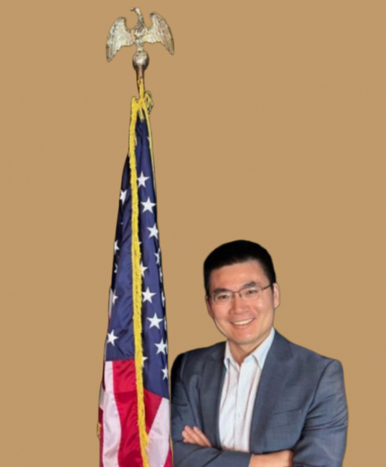

Malik Waqar, a Temple University graduate with an LLM degree, exemplifies resilience and determination. Despite a challenging start, he dedicated four years to pro bono work at a non-profit organization, focusing on helping those in immigration proceedings. Malik, now an immigration attorney at Cultura Law, remains undefeated in the Philadelphia court system, guided by his intuition and empathy. He attributes much of his success to the supportive faculty at Temple, maintaining strong relationships with his professors. Malik appreciated the accessibility of resources, smaller class sizes, and the assistance of the Law Library during his studies. His Temple experience was enriched by the diverse perspectives in his classes.
Learn more about Malik Waqar
AMBER Munoz
Born in Santo Domingo East, Dominican Republic. Visited the US for the first time to visit family in 2001 my mother met my German-American step father in Reading, PA and this state became my home ever since.
I’ve always wanted to work in law growing up with my father who’s a lawyer in the Dominican Republic, but wanted to help my migrant community inspired by my mother’s request to teach English and citizenship courses to professional migrants in 2003 before graduating high school.
I enjoy writing poetry as a Published author with an audio book of bilingual poems in 2007. My favorite hobbies aremaking arts and crafts with my children and practicing Pilates.
CERTIFICATES & TRAININGS
Basic Mediation Training, AdVoz. 2019
Basic Immigration Law Course, National Immigration Paralegal Institute, 2018 Teacher Training Summit of Citizenship at USCIS Washington DC 2012 & 2017 & 2020 Notary Public, 3 consecutive terms 2007-2016
Spanish Court interpreter -2008-2010
LANGUAGES
Spanish Court Interpreter ~ 2009
AFFILIATIONS
Philadelphia Association of Paralegals, member since 2017 Board Chairman and Legal Aid Program Director Worthy Community Professional, Inc. 2018 Volunteer at Advoz: Mediation & Restorative Practices 2019 Volunteer Secretary for City of Reading Police Diversity Board, 2012

SHI HAULI
Wallace Huali Shi is an associate attorney. He is licensed to practice law in the state of New York and the People’s Republic of China. His practice focuses on employment and immigration based immigration.
Prior to joining Lee & Lee, Wallace served as Project Manager in two of China’s top immigration agencies. During that time, he became deeply familiar with the immigration laws of several countries, including the United States, Greece, Portugal, Grenada, and Canada. Most recently, he served as in-house counsel for an EB-5 Regional Center.
Before becoming an U.S. immigration law expert, Wallace served as an assistant attorney with the Zhong Lun Law Firm, one of China’s premier law firms. At Zhong Lun, Wallace’s practice focused mainly on international equity investments and private equity funds.
Wallace earned his LLM from Temple University School of Law. He obtained his Master’s degree in Civil and Commercial Law as well as his Bachelor’s degrees in Economics and Law from China University of Political Science and Law (Beijing, People’s Republic of China).